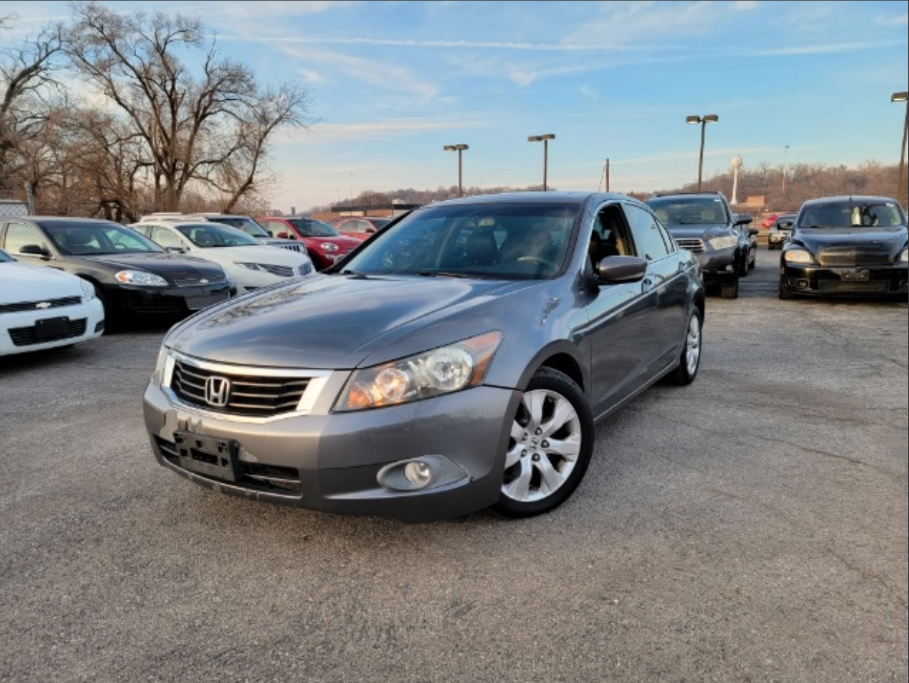

Lab 5 - Data Types and Variables
Challenge
Working with your partner, experiment with basic JavaScript data types and variables.
Problems
My biggest problem was trying to make the Script output become its own section on the lab sheet. I also faced difficulties trying to allign the image of the car at the top right of the page and making it not overlap the sections.
Reflection
Upon completing the lab I liked how my knowledge of how to change certain aspects of the site is there, I know what I am doing for the most part. I wish I could make the imgage fit within a certain section of the site like inside the challenges box for example, but it looks fine where it cuts off perfectly with the next box and doesn't look like I just threw the image in.
Results
Below is the script output about the car I drive on a semi daily basis.